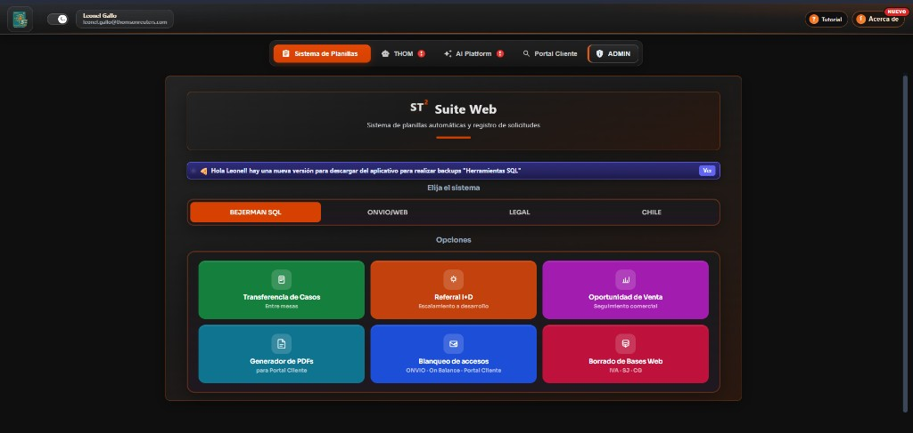

ST2 WEB
Portal del agente en el navegador: planillas (transferencia, referral I+D, oportunidad), blanqueo de accesos, generador de PDFs A4, Portal Cliente, THOM, AI Platform y panel de accesos por usuario.
ASP.NET Core 9 · JavaScript · REST
